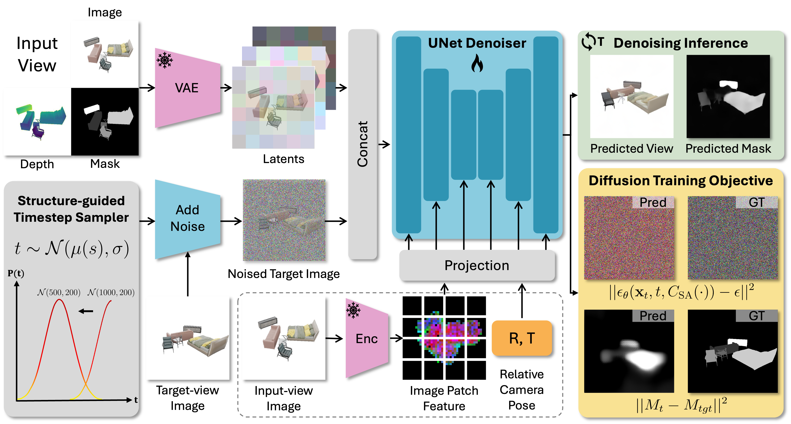
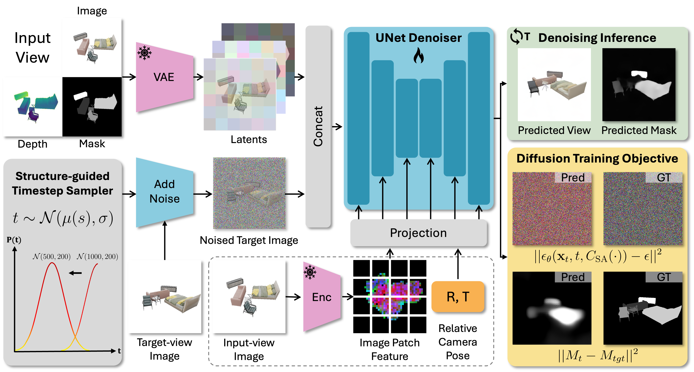
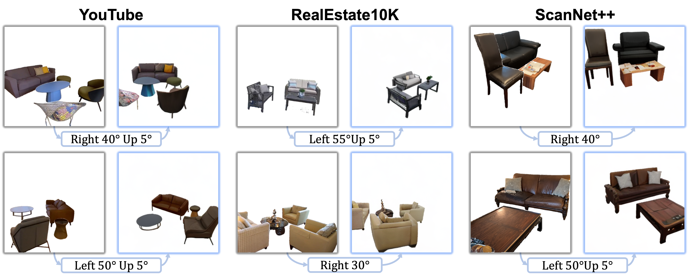

Zero-1-to-3: Zero-shot One Image to 3D Object
ZeroNVS: Zero-Shot 360-Degree View Synthesis from a Single Real Image
Free3D: Consistent Novel View Synthesis without 3D Representation
Abstract
Repurposing pre-trained diffusion models has been proven to be effective for NVS. However, these methods are mostly limited to a single object; directly applying such methods to compositional multi-object scenarios yields inferior results, especially incorrect object placement and inconsistent shape and appearance under novel views. How to enhance and systematically evaluate the cross-view consistency of such models remains under-explored.
To address this issue, we propose MOVIS to enhance the structural awareness of the view-conditioned diffusion model for multi-object NVS in terms of model inputs, auxiliary tasks, and training strategy. First, we inject structure-aware features, including depth and object mask, into the denoising U-Net to enhance the model's comprehension of object instances and their spatial relationships. Second, we introduce an auxiliary task requiring the model to simultaneously predict novel view object masks, further improving the model's capability in differentiating and placing objects. Finally, we conduct an in-depth analysis of the diffusion sampling process and carefully devise a structure-guided timestep sampling scheduler during training, which balances the learning of global object placement and fine-grained detail recovery. To systematically evaluate the plausibility of synthesized images, we propose to assess cross-view consistency and novel view object placement alongside existing image-level NVS metrics.
Extensive experiments on challenging synthetic and realistic datasets demonstrate that our method exhibits strong generalization capabilities and produces consistent novel view synthesis, highlighting its potential to guide future 3D-aware multi-object NVS tasks.
Method
1) We inject structure-aware features, including depth and object mask, into the denoising U-Net to enhance the model's comprehension of object instances and their spatial relationships.
2) We introduce an auxiliary task requiring the model to simultaneously predict novel view object masks, further improving the model's capability in differentiating and placing objects.
3) We devise a structure-guided timestep sampling scheduler that initially emphasizes larger noise scales during training and progressively shifts towards finer noise levels, which balances the learning of global object placement and fine-grained detail recovery.

2) We introduce an auxiliary task requiring the model to simultaneously predict novel view object masks, further improving the model's capability in differentiating and placing objects.
3) We devise a structure-guided timestep sampling scheduler that initially emphasizes larger noise scales during training and progressively shifts towards finer noise levels, which balances the learning of global object placement and fine-grained detail recovery.

Results
Comparisons

NVS results on C3DFS and Objaverse demonstrate our model generates more consistent and plausible novel views.
NVS results on real-world scenes
Our method can generate plausible novel views using in-the-wild images from YouTube, RealEstate10K, and ScanNet++.
Multi-view synthesis

Our method can synthesize plausible novel-view images across a wide range of camera pose variations.
Related Works
BibTeX
@article{lu2024movis,
title={MOVIS: Enhancing Multi-Object Novel View Synthesis for Indoor Scenes},
author={Lu, Ruijie and Chen, Yixin and Ni, Junfeng and Jia, Baoxiong and Liu, Yu and Wan, Diwen and Zeng, Gang and Huang, Siyuan},
journal={arXiv preprint arXiv:2412.11457},
year={2024}
}